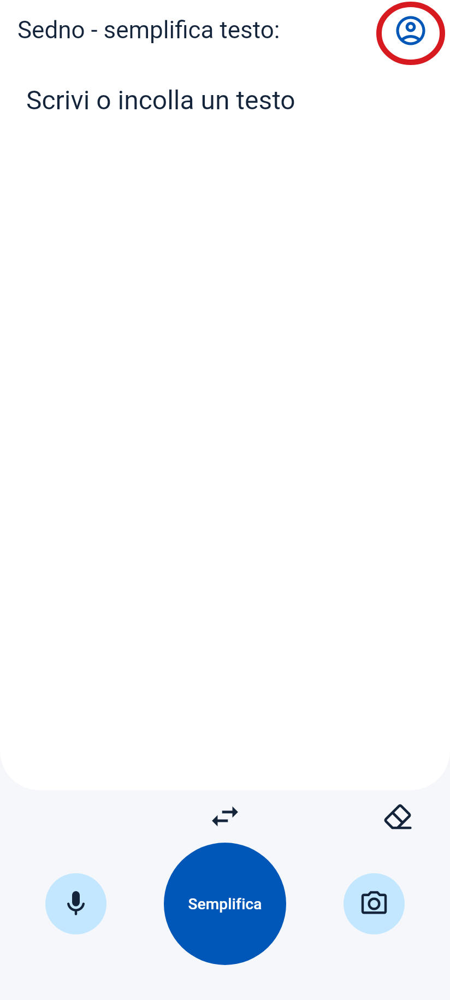
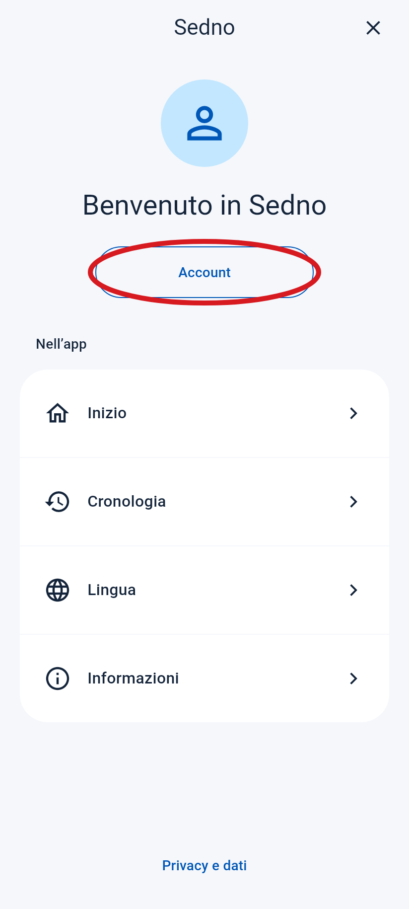
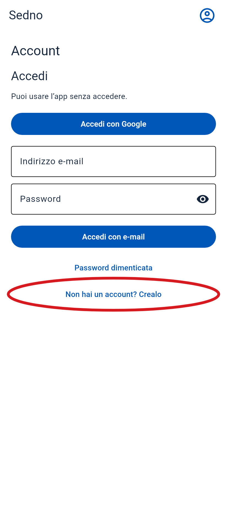
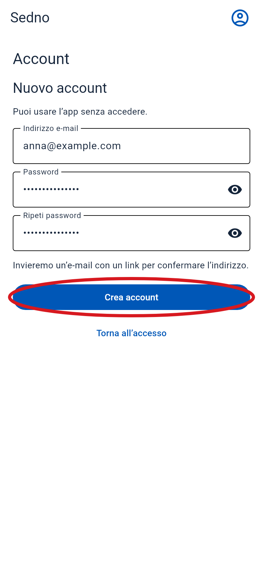
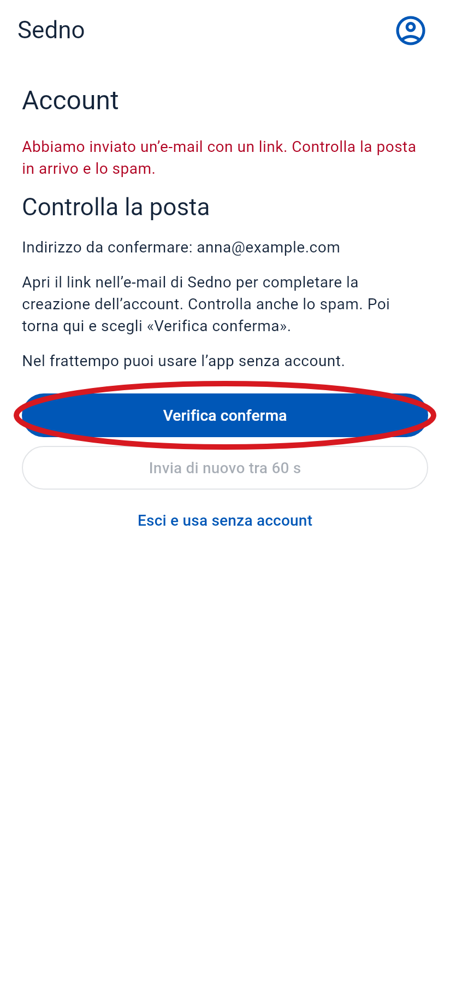
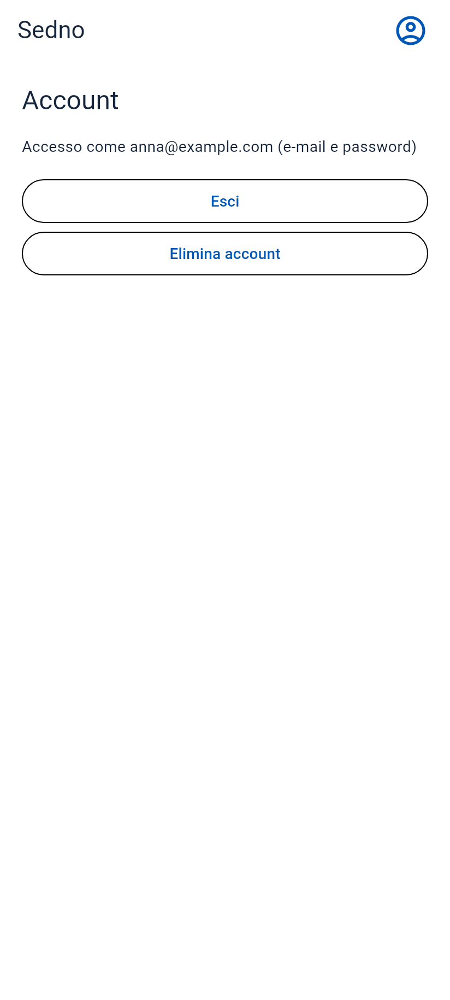

Come creare un account
Apri Sedno sul telefono. Segui questi passi in ordine.
Il cerchio rosso mostra dove toccare. Queste schermate vengono dall’app. L’email è un esempio.
-
1 Apri il menu
Tocca l’icona della persona in alto a destra.
Tocca qui

-
2 Scegli «Account»
Tocca il pulsante nel cerchio rosso.
Tocca qui

-
3 Scegli di creare un account
Tocca «Non hai un account? Crealo». Se non vedi il pulsante, scorri verso l’alto.
Tocca qui

-
4 Inserisci email e password
- Inserisci il tuo indirizzo email.
- Scegli una password di almeno 6 caratteri.
- Scrivi di nuovo la stessa password nel campo sotto.
- Tocca «Crea account».

-
5 Apri la tua posta
Trova l’email di Sedno. Controlla anche la cartella Spam. Apri il messaggio e tocca il link per confermare il tuo indirizzo email.
Tocca qui
Email di esempio
Sedno
Conferma il tuo indirizzo email in Sedno.
Conferma email -
6 Torna a Sedno
Apri di nuovo Sedno. Se vedi ancora questa schermata, tocca «Verifica conferma».
Tocca qui

-
7 Fatto!
Vedi il tuo indirizzo email. Il tuo account è pronto.
